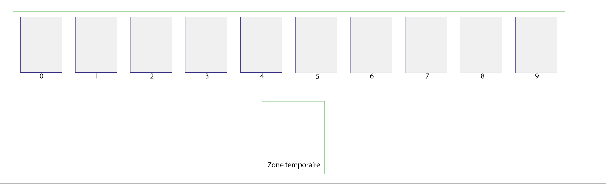

Activité préliminaire sur les tris
L'objectif de cette activité est de déterminer une stratégie claire et précise permettant, à partir d'une suite de cartes arbitrairement choisies, d’obtenir une suite de cartes triées dans l'ordre croissant suivant leur valeur faciale à la fin du processus.
On ne se souciera ici que des valeurs des cartes et non de leurs couleurs.
Voici l'ordre des valeurs des cartes, de la moins forte à la plus forte, que l'on utilisera :

Note : Si la carte Joker existe dans votre jeu, on considèrera qu'elle est plus forte que toutes les autres cartes.
Partie 1 : Expérimentation
La zone de jeu est constituée :
- d'une suite de 8 cartes auxquelles sont associées un indice de 0 à 7,
- d'une zone temporaire dans laquelle on peut stocker l'indice ou la valeur d'une carte.

À faire
Par groupes de 2 à 3 personnes, vous devez :
- Disposer une suite de 8 cartes arbitrairement choisies sur votre table.
- Établir, à l'écrit, une suite d'instructions « en français » permettant de trier ces cartes dans l'ordre croissant. Votre stratégie doit pouvoir être reproduite sur n'importe quelle suite de cartes.
Vous l'écrirez sur un bloc-note https://collab.infoforall.fr/. - Tester votre stratégie sur différentes suites de cartes et vous assurer qu'elle fonctionne toujours.
Important
Les seules opérations élémentaires autorisées sont les suivantes :
- comparer les valeurs de deux cartes,
- permuter (échanger) deux cartes,
- copier l'indice ou la valeur d'une carte de la suite dans la zone temporaire (et inversement),
- vous pouvez utiliser des conditions (SI ..., SINON) et des boucles (TANT QUE, POUR ... ALLANT DE ... A ...).
Voici également quelques règles à respecter :
- vous ne pouvez parcourir les cartes que de la gauche vers la droite (on ne revient pas en arrière),
- si une tâche est répétitive, vous pouvez la nommer (créer un autre bloc d'instructions qui sera utilisé dans le bloc principal),
- votre stratégie doit être suffisamment claire, mais vous n'avez pas obligation d'écrire un algorithme formel.
Partie 2 : Bilan des stratégies
Afin de s'assurer de la clarté de chaque stratégie, chaque groupe tentera à présent de trier une suite de 8 cartes arbitrairement choisies en utilisant les stratégies proposées par les autres groupes.
À faire
Par groupes de 2 à 3 personnes, vous devez :
- Dérouler les instructions proposées par les autres groupes sur des suites de 8 cartes choisies arbitrairement.
- Indiquer quelles sont les stratégies qui fonctionnent, et celles qui ne fonctionnent pas.
Partie 3 : Tri par sélection
Principe du tri par sélection
Le tri par sélection se déroule comme suit :
- Chercher l'indice de la plus faible carte de la suite (à partir de l'indice 0) et échanger cette carte avec celle qui est placée en premier. La première carte est maintenant la plus faible.
- Chercher l'indice de la plus faible carte de la suite en partant du 2ème élément (indice 1) et échanger cette carte avec celle qui est placée en deuxième. Les deux premières cartes sont les plus faibles et sont maintenant triées.
- Poursuivre ainsi jusqu’à l’avant dernière carte de la liste.
Note : Si la valeur la plus faible des cartes de la suite est associée à plusieurs cartes, on considèrera que la plus faible carte est la première (en parcourant de gauche à droite) ayant cette valeur.
À faire 1
Dérouler la méthode de tri par sélection décrite ci-dessus, avec une approche humaine d'abord, sur une suites de 8 cartes arbitrairement choisies afin de vérifier son bon fonctionnement.
On a ici expérimenté la méthode de tri par sélection avec une approche humaine, c'est-à-dire que vous avez utilisé votre cerveau pour déterminer facilement, à chaque étape, la carte la plus faible de la suite.
Toutefois, en raisonnant avec une démarche plus proche de la machine, la recherche de la carte la plus faible doit se décomposer en opérations élémentaires, incluant notamment des affectations, des comparaisons et des conditions.
Recherche de la plus faible carte
Pour rechercher la plus faible carte de la suite de cartes à partir d'un indice \(i\) donné :
- Stocker l'indice \(i\) dans la zone temporaire.
- En parcourant la suite de cartes de gauche à droite, à partir de l'indice \(i + 1\) et jusqu'au bout de la suite :
- Comparer les valeurs de chaque carte de la suite avec la valeur de la carte dont l'indice est stocké dans la zone temporaire.
SIune carte de la suite a une valeur strictement inférieure à la valeur de la carte dont l'indice est stocké dans la zone temporaire, remplacer l'ancien indice stocké dans la zone temporaire par l'indice de cette carte.
Renvoyerenfin l'indice contenu dans la zone temporaire.
À faire 2
Vous devez à présent :
- Dérouler de nouveau la méthode de tri par sélection, en décomposant la recherche de la carte la plus faible comme décrit ci-dessus, sur plusieurs suites de 8 cartes arbitrairement choisies.
- Calculer, pour chaque suite de cartes, le nombre total de comparaisons de deux cartes ayant été effectuées.
- Que pouvez-vous en dire sur le coût de ce tri ? Est-ce un tri efficace ?